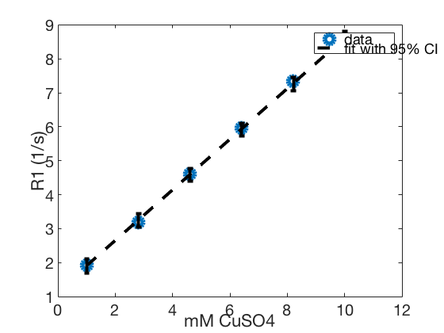
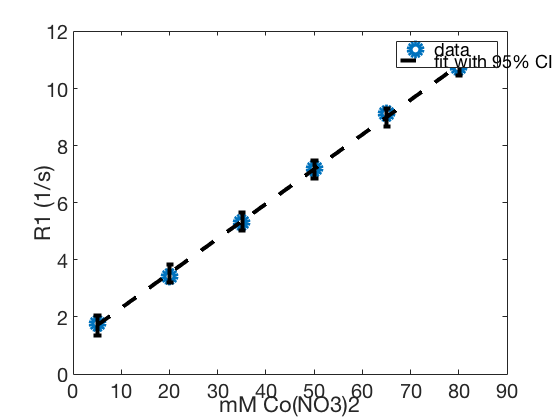

load ~/Desktop/2016-08-01_phantom-test/exam1/T1fit.mat labels_cc = zeros(size(mask)); SE = strel('diamond',2); for ii=1:ns m0 = mask(:,:,ii); m1 = imerode(m0, SE); [L, ~] = bwlabel(m1, 8); labels_cc(:,:,ii) = L; end labels = labels_cc; clear labels_cc m0 m1 L SE num = max(reshape(labels, [], ns), [], 1).';
slices = [17, 23]; idx17 = [3, 5, 9, 2, 6, 10, 1, 7, 11, 4, 8, 12]; idx23 = [1, 6, 10, 2, 5, 9, 3, 7, 12, 4, 8, 11]; idxs = {idx17, idx23};
slices = [4, 10];
idx4 = [3, 5, 9, 2, 6, 10, 1, 7, 11, 4, 8, 12];
idx10 = [1, 6, 11, 2, 5, 10, 3, 8, 12, 4, 7, 9];
idxs = {idx4, idx10};
R1vals = cell(1, length(slices));
map = T1est;
for ii=1:length(slices)
sl = slices(ii);
idx = idxs{ii};
x1 = squeeze(map(:,:,sl,:));
v = zeros(length(idx), 1);
v2 = cell(length(idx), 1);
for jj=1:2:length(idxs{ii})
m1 = (labels(:,:,sl)==idx(jj)) + (labels(:,:,sl)==idx(jj+1));
x2 = sort(1 ./ x1(repmat(m1, [1, 1, size(x1,3)])==1));
i1 = find(x2 > .01*median(x2), 1, 'first');
i2 = find(x2 <= .99*median(x2), 1, 'last');
x3 = x2(i1:i2); % throw out outliers
v(jj) = mean(x3);
v2{jj} = x3;
end
v = v(1:2:end);
v2 = v2(1:2:end);
R1vals{ii} = reverse(v);
end
axis4 = [1, 2.8, 4.6, 6.4, 8.2, 10]; % mM CuSO4 axis10 = [5, 20, 35, 50, 65, 80]; % mM Co(NO3)2 xlabel4 = 'mM CuSO4'; xlabel10 = 'mM Co(NO3)2'; xlabels = {xlabel4, xlabel10}; axis = {axis4, axis10}; R1trend = zeros(2, length(slices)); for ii=1:length(slices) [P, S] = polyfit(axis{ii}.', R1vals{ii}, 1); [Y, E] = polyconf(P, axis{ii}, S); R1trend(:, ii) = P; figure(ii); plot(axis{ii}, R1vals{ii}, 'o', 'linewidth', 3) hold on; errorbar(axis{ii}, Y, E, 'k--', 'linewidth', 2); hold off xlabel(xlabels{ii}); ylabel('R1 (1/s)'); legend('data', 'fit with 95% CI'); fprintf('%s:\tm1 = %.3f\tR1w = %.3f\n', xlabels{ii}, R1trend(1, ii), R1trend(2, ii)); end
mM CuSO4: m1 = 0.746 R1w = 1.161 mM Co(NO3)2: m1 = 0.122 R1w = 1.098 